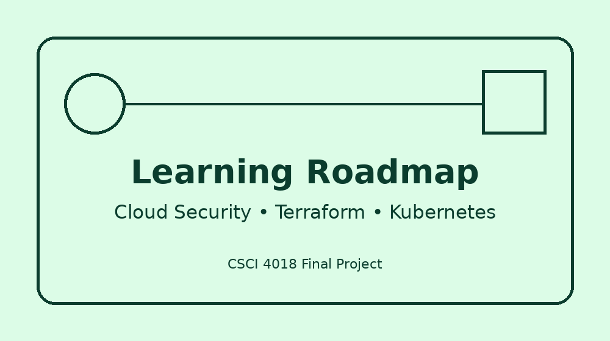

Technical Goals

These are three technical skills I would like to continue developing to improve my preparation for cloud computing, cloud security, and cybersecurity careers.
| Technical Skill Goal | Start Date | End Date |
|---|---|---|
| Strengthen AWS architecture and cloud security skills, including secure networking and identity management | July 2026 | December 2026 |
| Learn Terraform for infrastructure as code and repeatable cloud deployments | August 2026 | February 2027 |
| Learn Kubernetes fundamentals for container orchestration and modern cloud applications | September 2026 | March 2027 |
Update: This page was updated as part of the CSCI 4018 Final Project.